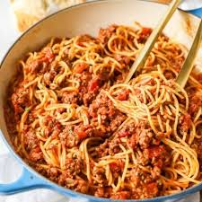

Spaghetti
DESCRIPTION
Ahhhhh spaghetti... A classic dish I'm sure we all have had a million times over, yet it continues
to be a staple in our adult lives. This easy recipe is 3 (or 4 depending on how you like it) recipe
will help you make a nice meal for the kids or a nice easy stay at home meal with the better half
(which is my Wife in this case).

INGREDIENTS:
- 1 package spaghetti
- 1 pound of meat of choice (I prefer beef but you can use a 50/50 beef and sausage mix)
- 1 can/jar sauce of choice (you can make your own but I don't have the time for that)
STEPS:
- Start pot of water and put on high until rolling boil. I usually end up using roughly half a pans worth.
- While the water is boiling I like to use this time to brown my meat of choice in a frying pan.
- Once you get a rolling boil add spaghetti and cook roughly 8 minutes until al dente.
- After al dente, drain the water bring it back to the pan and combine sauce, meat, and spaghetti.
- Stir and Serve!